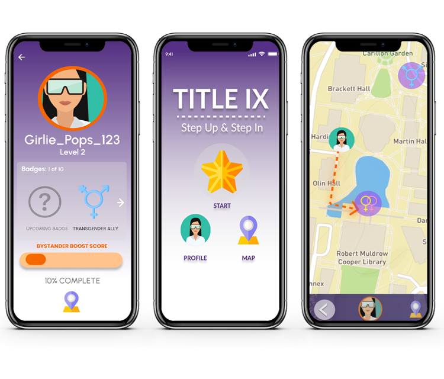
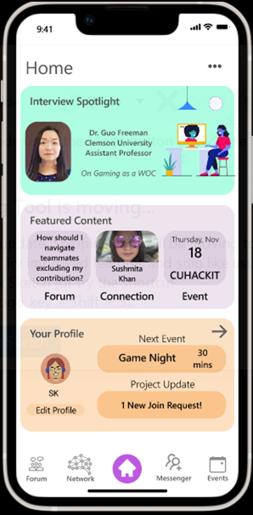
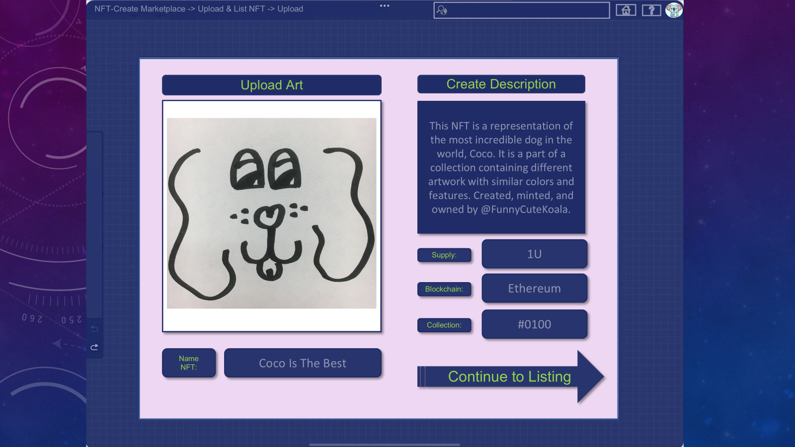
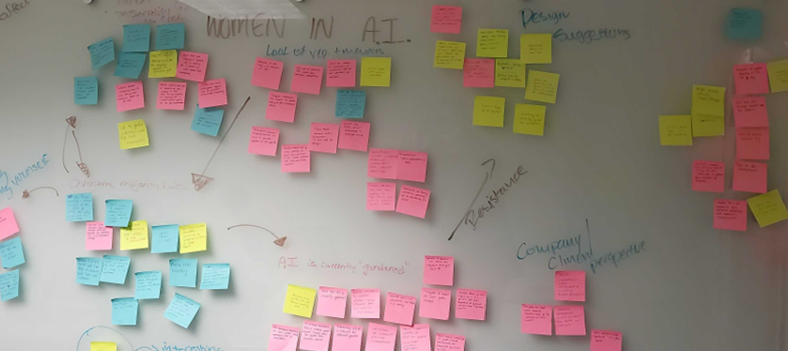
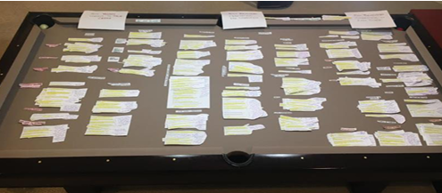

Specializing in AI system design and integration in the workplace, with expertise in how AI impacts human worker evaluation, job security, and organizational dynamics.
I hold a Ph.D. in Human-Centered Computing from Clemson University, where I specialized in AI integration in workplace environments. My research expertise centers on how the design and implementation of AI systems fundamentally impacts human worker evaluation, job security expectations, and organizational dynamics.
My dissertation, "Through Her Eyes: Centering Women's Experiences in the Design, Evaluation, and Integration of Human-AI Interaction in the Workplace," established critical linkages between AI system design and human performance evaluation, revealing how evaluator bias, AI functionality, and task allocation converge to shape workers' perceptions of job security and career stability.
My work spans AI ethics, human-AI collaboration, feminist HCI, and creating more equitable AI-augmented workplaces. I'm particularly focused on ensuring that AI integration considers and protects the experiences of marginalized workers.
My doctoral research explored the critical intersection of AI system design, human worker evaluation, and job security in workplace environments.
This research established a clear empirical linkage between the functional design of AI systems and how human workers are evaluated in AI-augmented environments. I demonstrated that AI system capabilities, transparency, and decision-making authority directly influence performance assessment criteria and evaluation frameworks applied to human workers.
AI system design characteristics significantly shape evaluation metrics, performance expectations, and perceived worker competence. The study revealed specific design patterns that either support or undermine fair human evaluation.
Mixed-methods approach including interviews with workers in AI-augmented roles, experimental design, and thematic analysis
Provides actionable guidance for organizations designing AI systems to ensure equitable worker evaluation practices
This research uncovered how AI integration shapes workers' expectations and perceptions of job security. I identified a complex interplay between evaluator bias, AI system design, and task characteristics that collectively inform workers' sense of career stability and future prospects in AI-augmented workplaces.
Job security perceptions are shaped by the interaction of three factors: how evaluators perceive AI capabilities, how AI systems are functionally designed, and the nature of tasks humans and AI perform. These factors blend to create distinct patterns of job security anxiety or confidence.
Longitudinal interviews, survey research, and grounded theory analysis across multiple industries
Offers frameworks for organizations to address job security concerns proactively during AI implementation
A collection of research-driven design projects focusing on AI integration, human-computer interaction, and inclusive technology.
Investigated AI moderation system design for online community interactions in immersive environments, addressing transparency, fairness, and escalation paths while preserving user experience. This work directly informed my dissertation research on AI system design and human evaluation.
Collaborated with military stakeholders to redesign AI-augmented dashboards used by Navy officers to assess squadron readiness. Focused on optimizing human-AI collaboration, shared responsibility models for AI-assisted decisions, and cognitive load reduction in high-stakes environments.

Designed an AR-based, geolocation-enabled interactive training application to raise awareness and teach intervention strategies for sexual assault scenarios, with emphasis on cultural and geographic localization.

Designed a mobile-first platform to support networking, mentorship, and community building among women of color in computer science, connecting students with events, mentors, and career opportunities.

Explored emerging technology to develop a novel copyright system allowing artists to register, display, and protect their digital creations in immersive VR spaces using blockchain authentication.
Designed and tested VR-native consent prompts to protect users in immersive environments, focusing on clarity, embodied interaction, and continuity of experience.
Academic research exploring human-AI interaction, women in technology, and inclusive computing.

Explored perspectives of women developers in AI, focusing on their roles, experiences, and insights about AI systems they help create.

Investigated how podcast creators and listeners develop parasocial relationships and utilize shared interests for social support online.
Surveyed early-career AI professionals to understand educational pathways, training gaps, and desired changes in AI curricula.
Explored how different podcast genres structure episodes and employ production techniques to shape listener engagement.
Interested in collaborating or learning more about my work? I'd love to hear from you.